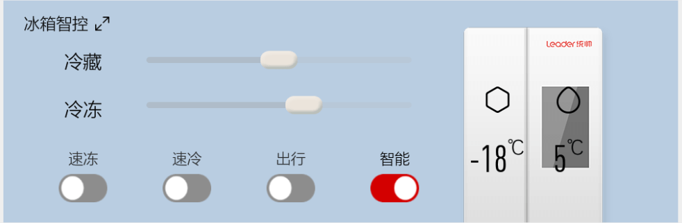

统帅Launcher首页包含顶部状态栏和功能卡片。 顶部状态栏左侧为小优头像及语音输入框，中间显示当前时间，右侧依次为个人中心、设置、消息中心、wifi入口。
功能卡片分为天气早知道、定时工具、吃好一点、放松享受、生活相册、蓝牙电话、冰箱智控、关爱留言、留住新鲜、品质商城。每个功能卡片可通过点击该左上角 符号打开，另外冰箱智控还可通过点击冰箱图标打开，其他功能卡片也可通过点击该功能卡片整个区域打开。
统帅Launcher首页包含顶部状态栏和功能卡片。 顶部状态栏左侧为小优头像及语音输入框，中间显示当前时间，右侧依次为个人中心、设置、消息中心、wifi入口。
功能卡片分为天气早知道、定时工具、吃好一点、放松享受、生活相册、蓝牙电话、冰箱智控、关爱留言、留住新鲜、品质商城。每个功能卡片可通过点击该左上角 符号打开，另外冰箱智控还可通过点击冰箱图标打开，其他功能卡片也可通过点击该功能卡片整个区域打开。
首页，点击计时器功能区，可以进入计时器功能。点击三个中的任一计时器选择相应的时间后，点击启动可以进行倒计时。暂停可停止当前计时，继续可从当前暂停的时间点开始，退出计时器时，在计时的仍在后台运行，暂停后的计时器则自动默认放弃计时。计时完成，则弹窗提示，并伴随提示声音。

